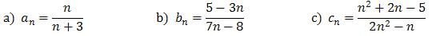
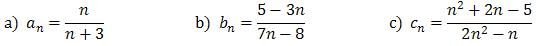
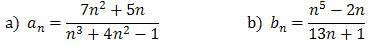
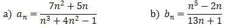
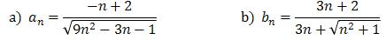
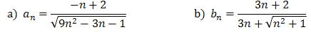
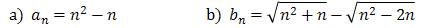
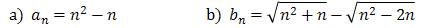

Jesteś tutaj: Studia → Granica ciągu
Granica ciągu
1.
Wprowadzenie do granicy ciągu
Wprowadzenie do granicy ciągu
W tym nagraniu wideo przedstawiam intuicję jaka stoi za pojęciem granicy ciągu.
Często podczas rozwiązywania zadań z granicy ciągów trzeba skorzystać z
definicji.
Definicja
Stałą liczbę \(g\) nazywamy granicą ciągu (\(a_n\)), jeżeli dla każdego dodatniego, dowolnie małego \(\epsilon\), istnieje taka liczba \(N\), że wszystkie wartości \(a_n\) o wskaźniku \(n \gt N\) spełniają nierówność: \[|a_n - g|\lt \epsilon \]Oblicz granice ciągów:
\(a_n=\frac{1}{n}+5\)
\(b_n=17-3n\)
\(c_n=\frac{1}{n+3}-7\)
\(d_n=\frac{(-1)^n}{n}\)
Oblicz granice ciągów:

Oblicz granice ciągów:


Oblicz granice ciągów:


Oblicz granice ciągów:


Oblicz granice ciągów:


W tym nagraniu wideo omawiam definicję granicy ciągu.